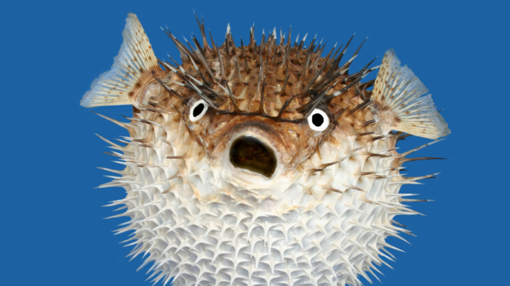
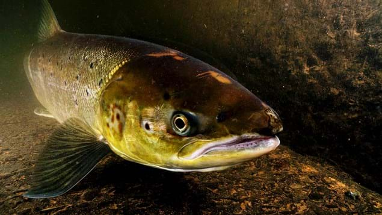
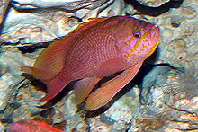
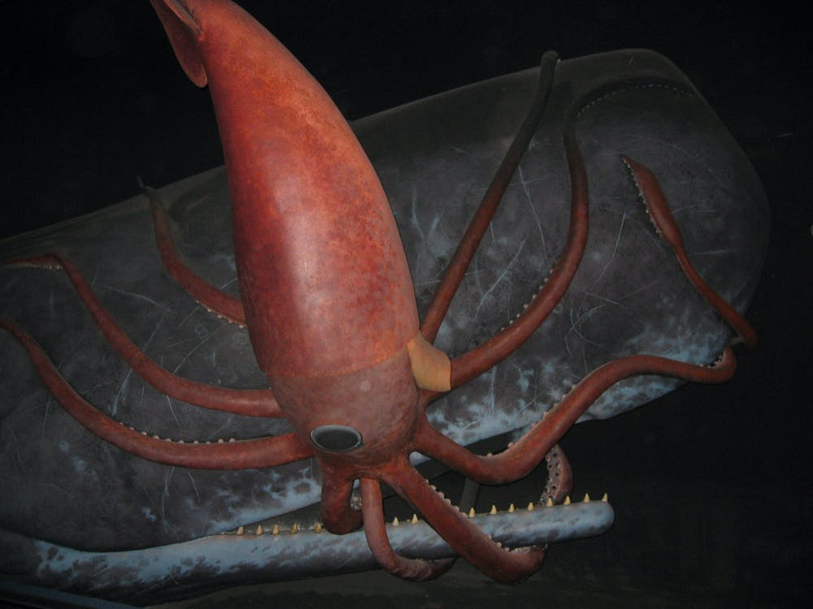
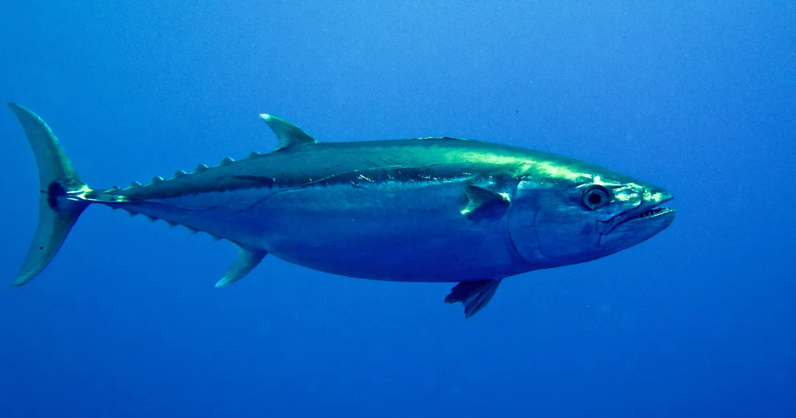
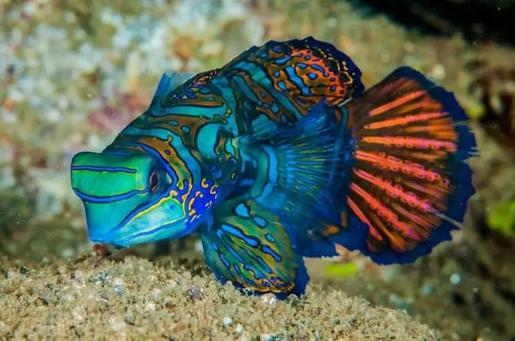

Welcome to the fish website . Everything you want to know about fish is here. 1 new exciting fish every day!

Tetraodontidae is a family of primarily marine and estuarine fish of the order Tetraodontiformes. The family includes many familiar species
variously called pufferfish, puffers, balloonfish, blowfish, blowies, bubblefish, globefish, swellfish, toadfish, toadies, honey toads, sugar toads,
and sea squab.[1] They are morphologically similar to the closely related porcupinefish, which have large external spines
(unlike the thinner, hidden spines of the Tetraodontidae, which are only visible when the fish have puffed up). The scientific name refers to
the four large teeth, fused into an upper and lower plate, which are used for crushing the hard shells of crustaceans and mollusks, their
natural prey.
Bass fish live in a lake. Now youll see some facts on bass fish.
| High | Medium | low | ||||||||
|---|---|---|---|---|---|---|---|---|---|---|
| Salmon 367 cal | Shark 111 cal | Crawfish 10 cal | Shad 363 cal |
| Bass fish 154 cal |
| Scampi 8 cal |
| |

The solomon also known as "Salmo salar" is a very intresting fish that is considered to be
"anadromous" which means that they live in both fresh and salt water Which is Very intresting
as it isnt that often that you see a fish like that.

Anthias the swallowtail sea perch or marine goldfish is a species of marine
ray-finned fish from the grouper and sea bass family Serranidae.
It is native to the eastern Atlantic Ocean and the Mediterranean Sea where it is associated with reefs.
It is found in the aquarium trade.

It is sometimes called the Antarctic squid or giant cranch squid and is believed to be the largest squid species in terms of mass.
It is the only recognized member of the genus Mesonychoteuthis and is known from only a small number of specimens.
The species is confirmed to reach a mass of at least 495 kilograms (1,091 lb),
though the largest specimens-known only from beaks found in sperm whale stomachs-may perhaps weigh as much as 600-700 kilograms (1,300-1,500 lb),
making it the largest-known invertebrate.
Maximum total length has been estimated at 10-14 metres (33-46 ft).

A tuna (also called tunny) is a saltwater fish that belongs to the tribe Thunnini, a subgrouping of the Scombridae (mackerel) family.
The Thunnini comprise 15 species across five genera,[2] the sizes of which vary greatly, ranging from the bullet tuna (max. length: 50 cm (1.6 ft), weight: 1.8 kg (4 lb))
up to the Atlantic bluefin tuna (max. length: 4.6 m (15 ft), weight: 684 kg (1,508 lb)).
The Atlantic bluefin averages 2 m (6.6 ft), and is believed to live up to 50 years.

Synchiropus splendidus is found in much of the western Pacific including the Philippines, Indonesia, Hong Kong, Australia, and New Guinea (Delbeek, 1989).
These fish are also found in the Ryukyu Islands (Randall et al. 1990).
Outside of its native range, S. splendidus is primarly a marine aquarium fish (Sandovy et al. 2001). (Delbeek, 1989; Randall, et al., 1990; Sadovy, et al., 2001)

The goldfish (Carassius auratus) is a freshwater fish in the family Cyprinidae of order Cypriniformes. It is one of the most commonly kept aquarium fish.
A relatively small member of the carp family (which also includes the Prussian carp and the crucian carp), the goldfish is native to East Asia.
It was first selectively bred in ancient China more than 1,000 years ago, and several distinct breeds have since been developed.
Goldfish breeds vary greatly in size, body shape, fin configuration and coloration (various combinations of white, yellow, orange, red, brown, and black are known).
LingDuck-Maker
Kappa C0dex - Helper on DnS, upload and SSL Verification .
sarwan - helped on cloudflare etc
nate - helped on setting up cloudflare.